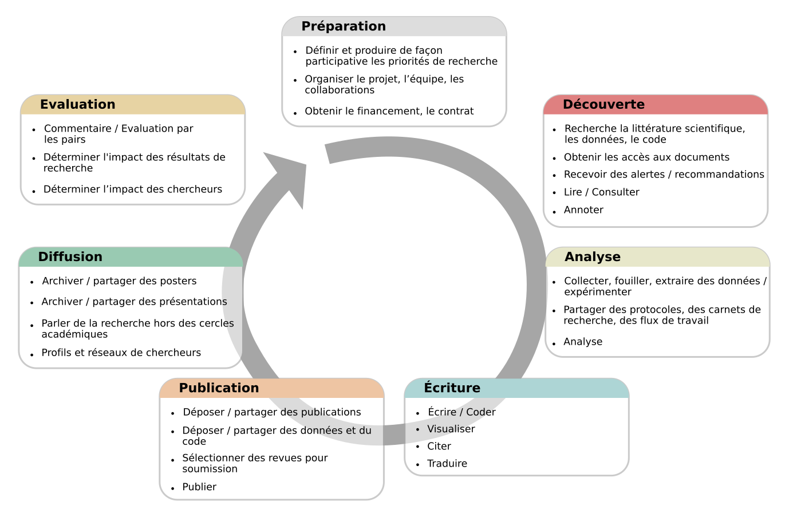

1. Concepts et Principes de la Science Ouverte
De quoi parle-t-on ?
La science ouverte est une manière de pratiquer la science permettant à d'autres personnes de collaborer et de contribuer ; les données de recherche, les notes de laboratoire et autres processus de recherche y sont librement accessibles, dans des conditions qui permettent la réutilisation, la redistribution et la reproduction de la recherche et de ses données et méthodes sous-jacentes (définition FOSTER de la Science Ouverte). En résumé, la science ouverte est un savoir transparent et accessible, partagé et développé via des réseaux collaboratifs (Vicente-Sáez & Martínez-Fuentes 2018).
La science ouverte vise à accroître la rigueur, la responsabilisation et la reproductibilité de la recherche. Elle est fondée sur les principes d'inclusion, de justice, d'équité et de partage et son but ultime est de changer la façon dont la recherche est effectuée, les personnes qui y participent et la manière dont elle est valorisée. Elle vise à rendre la recherche plus ouverte à la participation, à l'évaluation/la réfutation, à l'amélioration et à la (ré)utilisation pour le bénéfice du plus grand nombre.
Il existe plusieurs définitions de l'«ouverture» en fonction des divers aspects de la science ; l'Open Definition la décrit ainsi : « Les données et les contenus ouverts peuvent être librement utilisés, modifiés et partagés par n'importe qui à n'importe quelle fin ». La science ouverte englobe une variété de pratiques, incluant habituellement des domaines tels que le libre accès aux publications, les données de recherche ouvertes, les logiciels et outils libres, les flux de travail ouverts, la science citoyenne, les ressources éducatives ouvertes et les méthodes alternatives d'évaluation de la recherche, y compris l'évaluation ouverte par les pairs (Pontika et al., 2015).  Pontika et al. (2015)
Pontika et al. (2015)
Les objectifs et les postulats qui sous-tendent les efforts déployés pour mettre en œuvre ces diverses pratiques ont été étudiés par Fecher & Friesike (2013), dont les analyses de la littérature sur le sujet ont révélé cinq grandes préoccupations, ou « écoles de pensée ». Celles-ci sont :
L'école démocratique : Considérant qu'il existe une distribution inégale de l'accès au savoir, ce champ se préoccupe de rendre le savoir académique (y compris les publications et les données) accessible gratuitement à tous.
L'école pragmatique : Partant du principe que la création de connaissances est rendue plus efficace par la collaboration et renforcée par la critique, ce champ cherche à exploiter les effets de réseau en reliant les chercheurs et en rendant les méthodes académiques transparentes.
L'école infrastructurelle : Ce fil conducteur est motivé par l'hypothèse qu'une recherche efficace nécessite des plateformes, des outils et des services de diffusion et de collaboration facilement disponibles.
L'école publique : En reconnaissant le fait qu'un véritable impact sociétal exige l'engagement de la société dans la recherche et une communication des résultats scientifiques facile à comprendre, ce champ vise à amener le public à collaborer à la recherche par la science citoyenne et à rendre la production universitaire plus facile à comprendre, grâce par des résumés profanes, des blogs et d'autres modes de communication moins formels.
- L'école des mesures : Reconnaissant le fait que les outils traditionnels de mesure de l'impact de la science se sont avérés problématiques (en se concentrant trop sur les publications, souvent uniquement au niveau des revues scientifiques, par exemple), ce champ recherche des « métriques alternatives » pouvant utiliser les nouvelles possibilités des outils numériques en réseau pour suivre et mesurer l'impact des travaux de recherche par des activités auparavant invisibles.
Fondement
La science ouverte, telle que définie ci-dessus, englobe un grand nombre de changements structurels potentiels dans la pratique universitaire, dont la culture peut souvent être hiérarchique et conservatrice. De plus, même lorsque les chercheurs sont favorables aux objectifs de la science ouverte, ils ne voient peut-être pas encore l'intérêt de les adopter, car les mécanismes d'incitation existants ne reflètent pas encore cette nouvelle culture d'ouverture et de collaboration. Par conséquent, pour convaincre les chercheurs de la nécessité de changer leurs pratiques, il faudra une bonne compréhension non seulement des avantages éthiques, sociaux et académiques, mais aussi de la manière dont l'adoption des pratiques de la science ouverte les aidera réellement à réussir dans leur travail. Cette section décrit certains des concepts, principes, acteurs et pratiques fondamentaux de la science ouverte, et la manière dont s'intègrent dans un écosystème de recherche plus large.

Objectifs de la formation
Comprendre les principes et concepts sociaux, économiques, juridiques et éthiques qui sous-tendent la science ouverte.
Se familiariser avec l'histoire de la science ouverte, la disparité et la diversité des points de vue des différentes communautés de recherche, disciplines et cultures.
Mieux comprendre les développements autour de la science ouverte et l'impact personnel que ceux-ci peuvent avoir sur les chercheurs, la recherche et la société en général.
Éléments clés

Connaissances et Compétences
La science ouverte est le mouvement visant à rendre les résultats de la recherche scientifique plus accessibles, y compris les codes, les données et les documents de recherche.
- Elle englobe de nombreux aspects différents, mais souvent reliés, qui ont un impact sur l'ensemble du cycle de vie de la recherche, tels que la publication ouverte, les données ouvertes, les logiciels libres, les carnets de recherche ouverts, l'évaluation ouverte par les pairs, la diffusion ouverte et les matériaux ouverts (voir le glossaire pour les définitions).
Histoire de la science ouverte et motivations derrière le mouvement :
Les origines de l'édition académique remontent au XVIIème siècle avec les premières revues savantes.
La volonté d'accroître la motivation à partager les ressources entre les disciplines de recherche, ainsi que la transparence pour plus d'efficacité, de rigueur, de capacité à rendre des comptes, de durabilité pour les générations futures et de reproductibilité.
Des considérations éthiques, selon lesquelles une transparence accrue peut réduire la fraude, la manipulation des données et la communication sélective des résultats.
La situation actuelle résulte des pressions exercées par les communautés de recherche et les gouvernements pour que la recherche financée sur fonds publics soit partagée de façon plus ouverte, généralement dans le but d'accélérer la croissance et l'innovation au sein de la société et de l'économie.
Les résultats de la recherche financée par des fonds publics devraient être accessibles au public.
Il est nécessaire de susciter un changement culturel dans la recherche et parmi les chercheurs.
L'adoption d'outils et de technologies internet facilite la collaboration scientifique.
Différences et points communs dans les pratiques, les principes et les communautés de la science ouverte.
- Il est généralement admis que la science ouverte conduit à un impact accru associé à un partage et à une réutilisation plus larges (cf. ce qu'on appelle « l'avantage du libre accès pour la citation »).
- La science ouverte pourrait accroître la confiance dans la science et dans la fiabilité des résultats scientifiques.
La science ouverte en lien avec les questions de licences et de droits d'auteur.
- Les résultats de la recherche ouverte font généralement l'objet d'une licence ouverte afin de maximiser la réutilisation, tout en permettant au créateur de conserver la propriété et de bénéficier de la reconnaissance pour son travail.
Questions, obstacles et idées reçues courantes
Q : « Quelle est la différence entre science ouverte et « science » ? »
R : La science ouverte consiste à faire de la science traditionnelle avec plus de transparence à différentes étapes, par exemple en partageant ouvertement le code et les données. Beaucoup de chercheurs le font déjà, mais ne l'appellent pas science ouverte.
Q : « La science ouverte exclut-elle les sciences humaines et sociales ? »
R : Non, le terme de science ouverte est inclusif. En effet, la science ouverte est parfois plus largement appelée « recherche ouverte » ou « activités académiques ouvertes » afin d'englober d'autres disciplines, principes et pratiques. Cependant, « science ouverte » est un terme communément utilisé à plusieurs niveaux et il est donc logique de l'adopter à des fins de communication, à condition d'inclure toutes les disciplines de recherche.
Q : « La science ouverte mène-t-elle à une mauvaise utilisation ou à une mauvaise compréhension de la recherche ? »
R : Non, l'application des principes de la science ouverte est en fait une protection contre les mauvaises utilisations ou les incompréhensions. La transparence engendre la confiance et permet à d'autres de vérifier et de valider le processus de recherche.
Q : « La science ouverte entraînera-t-elle une surabondance d'informations ? »
R : Il vaut mieux avoir trop d'informations à traiter que d'en avoir trop peu et de risquer de passer à côté de points importants. Il existe en outre des technologies telles que les flux RSS, l'apprentissage automatique et l'intelligence artificielle qui facilitent l'agrégation de contenu.
Acquis de formation
Être capable d'expliquer les principes et concepts académiques, économiques et sociétaux fondamentaux qui sous-tendent la science ouverte, et en quoi elle est importante pour vous en termes d'impacts plus larges.
Développer la compréhension des nombreuses dimensions de la science ouverte et de certains des outils et pratiques qu'elle met en jeu.
Connaître l'état de l'art en matière de science ouverte et la diversité des perspectives qu'elle englobe.
Lectures complémentaires
European Commission's Directorate-General for Research & Innovation (RTD) (2016). Open innovation, Open Science, open to the world - a vision for Europe. ec.europa.eu/digital-single-market/en/news/open-innovation-open-science-open-world-vision-europe
Fecher and Friesike (2014). Open Science: One Term, Five Schools of Thought. doi.org/10.1007/978-3-319-00026-8_2
High Level Group (2017). Europe's future. Open innovation, Open Science, open to the world: reflections of the Research, Innovation and Science Policy Experts (RISE). doi.org/10.2777/79895
Masuzzo and Martens (2017). Do you speak Open Science? Resources and tips to learn the language. doi.org/10.7287/peerj.preprints.2689v1
Watson (2015). When will ‘Open Science’ become simply ‘science’?. doi.org/10.1186/s13059-015-0669-2
+ 2023
Rapport de l’UNESCO : Recommandations sur la Science Ouverte (2021) https://unesdoc.unesco.org/ark:/48223/pf0000379949.locale=fr
Introduction à la science ouverte, Urfist de Rennes : https://urfist.univ-rennes2.fr/ressources/introduction-la-science-ouverte?destination=ressources
Passeport pour la science ouverte. Guide à l’usage des doctorants. Ouvrir la science (2022) : https://www.ouvrirlascience.fr/passeport-pour-la-science-ouverte-guide-pratique-a-lusage-des-doctorants/
La science ouverte. MOOC Sorbonne université : https://www.fun-mooc.fr/fr/cours/la-science-ouverte/